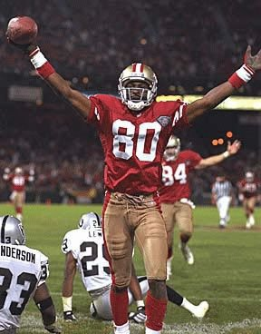

- 3× Super Bowl champion (XXIII, XXIV, XXIX)
- Super Bowl MVP (XXIII)
- 13× Pro Bowl (1986–1996, 1998, 2002)
- 10× First-team All-Pro (1986–1990, 1992–1996)
- 2× Second-team All-Pro (1991, 2002)
- Bert Bell Award (1987)
- 2× NFL Offensive Player of the Year (1987, 1993)
- 6× NFL receiving yards leader (1986, 1989, 1990, 1993–1995)
- 2× NFL receptions leader (1990, 1996)
- 6× NFL receiving touchdowns leader (1986, 1987, 1989–1991, 1993)
- NFL 75th Anniversary All-Time Team
- NFL 1980s All-Decade Team
- NFL 1990s All-Decade Team
- San Francisco 49ers No. 80 retired
- 2× First-team I-AA All-American (1983, 1984)